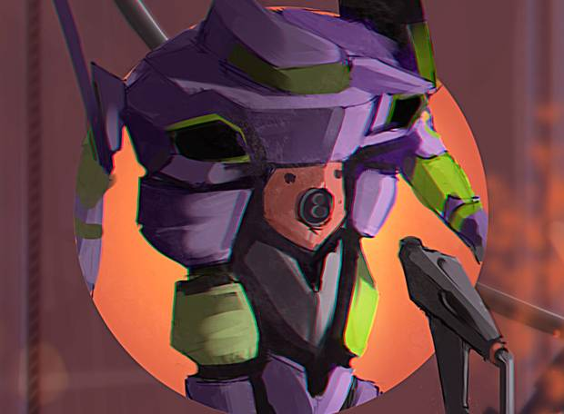

A anatomia das unidades EVA
1) Por baixo de suas armaduras, as Unidades Evangelion, ou EVAs, são seres biológicos vivos, criados a partir da tentativa de clonar um Anjo (monstros gigantes que são os vilões principais do anime).
2) Todas as EVAs possuem uma armadura, uma contenção criada pelos humanos para protegê-las e garantir o controle dos pilotos.
3) Assim como os Anjos, as EVAs possuem um núcleo (“core”) que, quando destruído, acaba com sua vida. É o coração dos Anjos e EVAs.
4) A Faca Progressiva fica armazenada na torre utilitária do braço esquerdo. Ela funciona com vibrações de partículas em alta frequência, o que a permite cortar objetos em nível molecular.
5) A certo ponto do anime, descobre-se que uma Unidade Evangelion necessita de uma alma para funcionar corretamente. A Eva-01 possui uma parcela da alma da mãe de Shinji, Yui Ikari, que faleceu durante um experimento feito dentro do mecha.
6)Os movimentos feitos com as mãos do piloto controlam o movimento dos membros do EVA – quanto maior a taxa de sincronização, mais fiéis e rápidos são os movimentos. A Eva-01 possui uma força proporcional ao seu tamanho: seus socos não são capazes de jogar os Anjos para longe.
7) O revestimento é inteiro de metal, mas a proteção real vem do AT-Field.
8) Os pilotos controlam as EVAs pelo pensamento. Quanto maior a sincronização, maior a responsividade. Todos os danos feitos à Unidade são sentidos pelo piloto, como uma “dor virtual”.
MODO BERSERK
Quando recebe muito dano, a Unidade-01 ativa seu estado Berserk, mais forte, no qual consegue quebrar os membros e o núcleo de certos Anjos utilizando apenas as mãos.
IMPENETRÁVEL

O AT-Field é um campo de força externo que pode ser usado tanto como escudo defensivo quando como forma de ataque. Nesse segundo caso, o campo é invertido e utilizado para perfurar o AT-Field do oponente.
ENTRY PLUG
Os pilotos entram nos EVAs por meio do Entry Plug. Trata-se de um compartimento alongado e cilíndrico onde se situa a cabine de controle (cockpit) do piloto.
LÍQUIDO RESPIRÁVEL
Os pilotos ficam submersos em uma substância chamada LCL, que aumenta a sincronia com sua unidade. O líquido entra pelo nariz e preenche os pulmões do piloto, facilitando a sincronização dos impulsos nervosos com a EVA. Ele consegue respirar normalmente enquanto imerso na LCL. Depois de ativado, o LCL adquire transparência e possibilita ao piloto ter uma visão panorâmica do exterior do Eva-01. Por medida de segurança, os Entry Plug podem ser ejetados pela Ponte de Comando, à distância.
FONTE DO PODER
A fonte de energia das Unidades Evangelion é o Cabo Umbilical, que garante energia para o funcionamento pleno. O cabo pode ser retirado remotamente pela central de controle ou pelo próprio piloto. Sem ele, as EVAs conseguem operar com uma bateria interna por 5 minutos em condições normais ou apenas um minuto em força máxima .